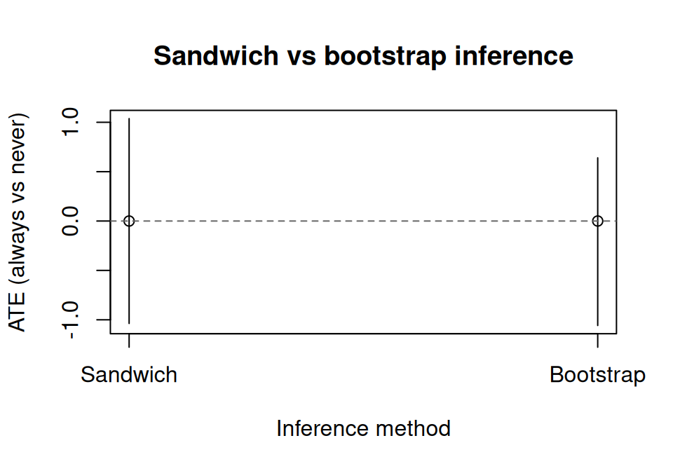
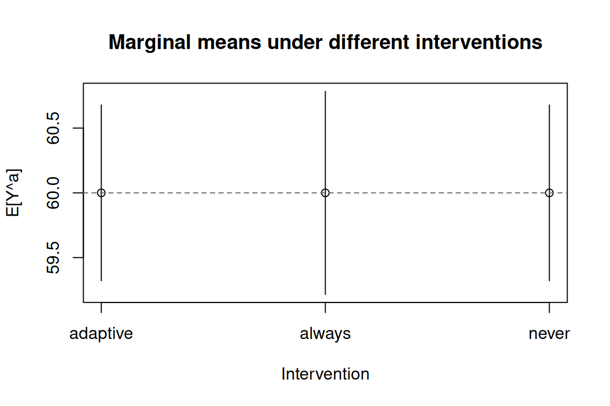
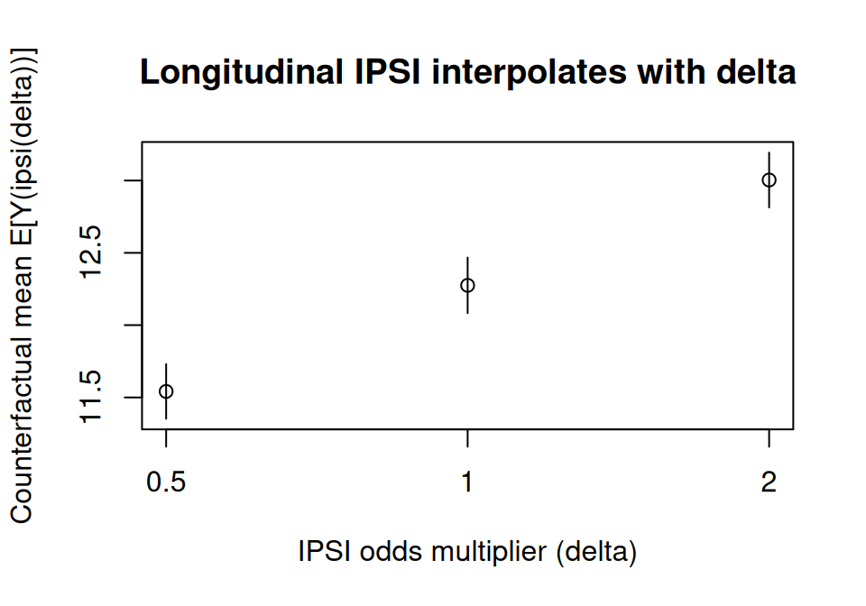

纵向处理：ICE g-computation
Longitudinal treatments: ICE g-computation · causatr 官方文档中译
来源：R 包 causatr 官方文档
longitudinal.qmd，MIT 许可。 本页是中译，代码与运行结果直接取自原站的渲染输出，未在本站重新执行。 Copyright (c) 2026 causatr authors；许可证全文见原仓库LICENSE.md。
当处理和混杂因子随时间变化时，即使调整了所有混杂因子，标准回归方法给出的估计值仍然有 偏倚。G-方法可以解决这个问题。causatr 实现了 ICE（迭代条件期望）G-computation (Zivich 等 2024)，它只需要为结局建模——不需要为时变混杂因子建模。
如需双稳健保护，请使用 estimator = "aipw"。ICE-AIPW (Bang 和 Robins 2005) 在每一步向后回归中加入倾向评分加权的残差校正：只要或者结局回归 设定正确，或者每个时间点上的倾向评分模型设定正确，就能得到相合的估计量。 同样适用 causat() + contrast() 这套 API；三明治方差和 bootstrap 方差都支持。
"sandwich" 方差是完整的堆叠估计方程 M-估计三明治方差（各期倾向评分 + 各步结局 得分函数 + 边际均值方程），因此在平衡与非平衡面板上都是正确的——包括单调失访 或删失行过滤的情形。它涵盖 GLM 族与 MASS::glm.nb 结局/倾向评分模型，以及 多项（分类处理）倾向评分。局限：当结局或倾向评分冗余参数用惩罚类/非似然 学习器（mgcv::gam、betareg::betareg）拟合时，解析三明治方差不可用—— ci_method = "sandwich" 会抛出明确的报错，此时应改用 ci_method = "bootstrap"， 它对任何配置都有效。
本 vignette 演示 causatr 中的 ICE G-computation，内容包括：
- 处理-混杂因子反馈问题
- ICE 的拟合与对比
- 三明治推断与 bootstrap 推断
- 静态、动态与修正处理策略干预
history参数（马尔可夫阶数）- 二值结局
- 与朴素回归的比较
设置
library(causatr)
library(tinytable)
library(tinyplot)问题所在：处理-混杂因子反馈
当 \(A_0\) 影响时变混杂因子 \(L_1\)，而 \(L_1\) 又反过来同时影响 \(A_1\) 和 \(Y\)（\(A_0 \to L_1 \to A_1\) 且 \(L_1 \to Y\)）时，普通 回归无法还原边际反事实均值 \(\mathbb{E}[Y^{a_0, a_1}]\)：
- 调整 \(L_1\) 会阻断 \(A_0\) 到 \(Y\) 的部分因果路径 （并且视 DAG 而定，还可能经由 \(L_1\) 与 \(Y\) 的未测量 共同原因打开一条对撞路径）。
- 不调整则会留下 \(L_1\) 对 \(A_1 \to Y\) 这条箭头的混杂。
- ICE G-computation 通过迭代条件期望、并对每种干预所诱导的 \(L_1\) 分布做边际化，同时正确处理了上述两种情形。
表 20.1：零假设悖论
我们重建 Hernán 和 Robins (2025) 表 20.1 的数据集，缩放为在 2 个时间点上观测的 3,200 名个体。（原表有 32,000 人；这里只用 1/10 以加快 vignette 渲染。） 该 DGP 有一个非常特殊的性质：每一种联合方案 \((a_0, a_1)\) 的边际 反事实均值都相同，\(\mathbb{E}[Y^{a_0, a_1}] = 60\)，因此任意两种方案 之间的真实因果对比恰好为零——即“零假设为真”。 关键在于，零值只在边际层面成立：在 \(L_1\) 的各层内， \(A_0\) 的条件效应是 \(-8\)。处理-混杂因子反馈正是让非零条件效应 在边际上平均为零的那个机制。
DGM。两个时期（\(k = 0, 1\)），二值处理 \(A_k \in \{0, 1\}\)， 二值时变混杂因子 \(L_1 \in \{0, 1\}\)（受 \(A_0\) 影响），以及在 \(k = 1\) 测量的连续结局 \(Y\)。因果结构为 \(A_0 \to L_1 \to A_1\)、\(A_0 \to L_1 \to Y\) 和 \(A_0 \to Y\)（直接）。 该表的构造使得给定 \(L_1\) 时 \(A_0\) 的条件效应为 \(-8\)， 但由于 \(A_0\) 以恰好相互抵消的方式移动了 \(L_1\) 的分布， 这个条件效应在边际上平均恰好为零。 该表所隐含的结构方程为：
\[ \begin{aligned} A_0 &\sim \text{Bernoulli}(p_{A_0}), \\ L_1 \mid A_0 &\sim \text{Bernoulli}\bigl(P(L_1 = 1 \mid A_0)\bigr), \\ A_1 \mid L_1 &\sim \text{Bernoulli}\bigl(P(A_1 = 1 \mid L_1)\bigr), \\ Y &= 84 - 8 \cdot A_0 - 32 \cdot L_1. \end{aligned} \]
给定 \((A_0, L_1)\) 后结局是确定性的，且不直接依赖 \(A_1\)。 关键性质是：\(P(L_1 = 1 \mid A_0 = 1) > P(L_1 = 1 \mid A_0 = 0)\)， 即 \(A_0\) 会提高 \(L_1\)，而 \(L_1\) 对 \(Y\) 有很强的负向效应， 于是经由 \(L_1\) 的间接危害恰好抵消了直接获益。 四种联合方案的已知真值都是 \(\mathbb{E}[Y^{a_0, a_1}] = 60\)， 因此任意两种方案之间的 ATE 恰好为 0。
groups <- data.frame(
A0 = c(0, 0, 0, 0, 1, 1, 1, 1),
L1 = c(0, 0, 1, 1, 0, 0, 1, 1),
A1 = c(0, 1, 0, 1, 0, 1, 0, 1),
Y = c(84, 84, 52, 52, 76, 76, 44, 44),
N = c(240, 160, 240, 960, 480, 320, 160, 640)
)
rows <- lapply(seq_len(nrow(groups)), function(i) {
g <- groups[i, ]
off <- sum(groups$N[seq_len(i - 1)])
data.frame(
id = seq_len(g$N) + off,
A0 = g$A0, L1 = g$L1, A1 = g$A1, Y = g$Y
)
})
wide <- do.call(rbind, rows)
t0 <- data.frame(
id = wide$id, time = 0L, A = wide$A0, L = NA_real_, Y = NA_real_
)
t1 <- data.frame(
id = wide$id, time = 1L, A = wide$A1, L = wide$L1, Y = wide$Y
)
long <- rbind(t0, t1)
head(long, 4)
#> id time A L Y
#> 1 1 0 0 NA NA
#> 2 2 0 0 NA NA
#> 3 3 0 0 NA NA
#> 4 4 0 0 NA NA数据采用个体-时期（长）格式：每个个体在每个时间点占一行。 L 是时变混杂因子（仅在时间 1 测量）。
朴素方法产生的偏倚演示
Hernán 和 Robins (2025) 第 20 章用这张表提出了一个尖锐的论点：两种常规回归策略 都没有还原出零效应。真值是 \(\mathbb{E}[Y^{1,1}] - \mathbb{E}[Y^{0,0}] = 0\)， 而且四种联合处理方案的边际反事实均值其实都是 \(60\)。
策略 1 —— 不调整。 丢掉 \(L_1\)，指望每个时间点的随机化能处理掉混杂：
wide_sub <- wide[!is.na(wide$Y), ]
naive_unadj <- lm(Y ~ A0 + A1, data = wide_sub)
round(coef(naive_unadj), 3)
#> (Intercept) A0 A1
#> 68.711 -1.244 -12.444两个系数都偏离了零（\(A_0 \approx -1.24\)，\(A_1 \approx -12.44\)）。\(A_1\) 的估计值 偏倚尤其严重：\(L_1\) 对 \(A_1 \to Y\) 造成混杂，不做调整时这种混杂会直接渗入系数。
策略 2 —— 调整 \(L_1\)。 流行病学的标准反射动作：
naive_fit <- lm(Y ~ A0 + A1 + L1, data = wide_sub)
naive_coefs <- coef(naive_fit)
round(naive_coefs, 3)
#> (Intercept) A0 A1 L1
#> 84 -8 0 -32现在 \(A_1 = 0\)（这是对的，因为在这个 DGP 里 \(Y\) 是 \(A_0\) 与 \(L_1\) 的确定性函数）， 但 \(A_0 = -8\) —— 这是 \(L_1\) 各层内 \(A_0\) 的条件效应，不是我们想要的因果对比。 调整 \(L_1\) 阻断了 \(A_0 \to L_1 \to Y\) 这条路径，只留下直接效应的残余，于是 \(A_0\) 看上去像是保护性效应，而实际上边际因果效应为零。
要点。 一种朴素策略让 \(A_1\) 产生偏倚，另一种让 \(A_0\) 产生偏倚。在这张表上， 没有任何一种回归设定能同时给出 \(A_0 = 0\) 和 \(A_1 = 0\)。这就是催生 g-methods 的 零效应悖论：要还原零效应，唯一的办法是对 \(L_1\) 在特定干预下的分布做边际化， 而这正是下面 ICE G-computation 所做的事。
ICE G-computation：拟合
用 causat() 时，指定 id 和 time 即可触发纵向模式。基线混杂因子放进 confounders，时变混杂因子放进 confounders_tv。需要更精细的控制时，可以用 confounders_tv_outcome 和 confounders_tv_treatment 为结局模型和处理模型分别 指定不同的时变协变量。
fit <- causat(
long,
outcome = "Y",
treatment = "A",
confounders = ~ 1,
confounders_tv = ~ L,
id = "id",
time = "time",
model_fn = stats::glm
)
fit
#> <causatr_fit>
#> Estimator: G-computation
#> Type: longitudinal
#> Outcome: Y (gaussian)
#> Treatment: A
#> Estimand: ATE
#> Confounders: ~1
#> TV conf.: ~L
#> ID: id
#> Time: time
#> N: 6400这一阶段不拟合任何模型。ICE 把模型拟合推迟到 contrast()，因为序贯结局模型取决于 所评估的干预。
ICE G-computation：带三明治 SE 的对比
比较“始终处理”（每个时间点 A = 1）与“从不处理”（每个时间点 A = 0）：
result <- contrast(
fit,
interventions = list(always = static(1), never = static(0)),
reference = "never",
type = "difference",
ci_method = "sandwich"
)
result| intervention | estimate | se | ci_lower | ci_upper |
|---|---|---|---|---|
| always | 60 | 0.4 | 59.216 | 60.784 |
| never | 60 | 0.346 | 59.321 | 60.679 |
| comparison | estimate | se | ci_lower | ci_upper |
|---|---|---|---|---|
| always vs never | -0.00000000000009947598 | 0.529 | -1.037 | 1.037 |
ICE 正确还原出 E[Y^{always}] = E[Y^{never}] = 60 和 ATE = 0，与数据生成 过程的预期一致。
结果可视化
naive_ci <- confint(naive_fit)
est_df <- data.frame(
method = c("Naive (A0)", "Naive (A1)", "ICE"),
estimate = c(
naive_coefs["A0"], naive_coefs["A1"], result$contrasts$estimate[1]
),
ci_lower = c(
naive_ci["A0", 1], naive_ci["A1", 1], result$contrasts$ci_lower[1]
),
ci_upper = c(
naive_ci["A0", 2], naive_ci["A1", 2], result$contrasts$ci_upper[1]
)
)
tinyplot(
estimate ~ method,
data = est_df,
type = "pointrange",
ymin = est_df$ci_lower,
ymax = est_df$ci_upper,
ylab = "Estimated treatment effect",
xlab = "",
main = "ICE recovers the null effect"
)
abline(h = 0, lty = 2, col = "grey40")
三明治 SE：堆叠估计方程
默认的 ci_method = "sandwich" 使用面向堆叠估计方程的经验三明治估计量 (Zivich 等 2024)。它考虑了全部 K 个序贯结局模型带来的不确定性，而不只是最后 一个模型。
result$estimates[, c("intervention", "estimate", "se")]
#> intervention estimate se
#> <char> <num> <num>
#> 1: always 60 0.4000000
#> 2: never 60 0.3464102标准误有限且为正，说明即便在大样本下，三明治方差估计量也在正常工作。
Bootstrap SE
出于稳健性考虑，或在使用灵活模型（例如 GAM）时，bootstrap 会对个体重抽样 （同一个体的所有时间点一起抽取），并重新运行完整的 ICE 流程。
result_boot <- contrast(
fit,
interventions = list(always = static(1), never = static(0)),
reference = "never",
type = "difference",
ci_method = "bootstrap",
n_boot = 20L
)
result_boot| intervention | estimate | se | ci_lower | ci_upper |
|---|---|---|---|---|
| always | 60 | 0.316 | 59.44 | 60.465 |
| never | 60 | 0.371 | 59.482 | 60.679 |
| comparison | estimate | se | ci_lower | ci_upper |
|---|---|---|---|---|
| always vs never | -0.00000000000009947598 | 0.489 | -1.058 | 0.64 |
parallel 与 ncpus 参数可为较大的数据集启用并行的 bootstrap 重复。支持四种 后端："no"（串行）、"multicore"（Unix fork，多数 Linux/macOS 环境下的默认 值）、"snow"（跨平台 socket 集群，这两种都通过 boot::boot() 实现），以及 "future"（任意已激活的 future::plan()——本地 multisession、远程 plan(cluster, ...)，或用于 HPC 作业数组的 future.batchtools）。"future" 绕过 boot::boot()，因此调度由 plan 本身负责；此时 ncpus 会被忽略。
# boot::boot parallel (fork / socket)
result_par <- contrast(
fit,
interventions = list(always = static(1), never = static(0)),
reference = "never",
ci_method = "bootstrap",
n_boot = 20L,
parallel = "multicore",
ncpus = 4L
)
# future backend (any future::plan())
library(future)
plan(multisession, workers = 4)
result_future <- contrast(
fit,
interventions = list(always = static(1), never = static(0)),
reference = "never",
ci_method = "bootstrap",
n_boot = 500L,
parallel = "future"
)三明治 SE 与 bootstrap SE 的比较
se_df <- data.frame(
method = c("Sandwich", "Bootstrap"),
estimate = c(result$contrasts$estimate[1], result_boot$contrasts$estimate[1]),
ci_lower = c(result$contrasts$ci_lower[1], result_boot$contrasts$ci_lower[1]),
ci_upper = c(result$contrasts$ci_upper[1], result_boot$contrasts$ci_upper[1])
)
tinyplot(
estimate ~ method,
data = se_df,
type = "pointrange",
ymin = se_df$ci_lower,
ymax = se_df$ci_upper,
ylab = "ATE (always vs never)",
xlab = "Inference method",
main = "Sandwich vs bootstrap inference"
)
abline(h = 0, lty = 2, col = "grey40")
动态干预
ICE 支持动态处理方案，即处理取决于时变协变量。这里，个体仅在 L = 1（存在该混 杂因子）时才接受处理：
result_dyn <- contrast(
fit,
interventions = list(
adaptive = dynamic(
\(data, trt) ifelse(!is.na(data$L) & data$L > 0, 1L, 0L)
),
always = static(1),
never = static(0)
),
reference = "never",
ci_method = "sandwich"
)
result_dyn| intervention | estimate | se | ci_lower | ci_upper |
|---|---|---|---|---|
| adaptive | 60 | 0.346 | 59.321 | 60.679 |
| always | 60 | 0.4 | 59.216 | 60.784 |
| never | 60 | 0.346 | 59.321 | 60.679 |
| comparison | estimate | se | ci_lower | ci_upper |
|---|---|---|---|---|
| adaptive vs never | -0.00000000000006394885 | 0 | -0 | 0 |
| always vs never | -0.00000000000009947598 | 0.529 | -1.037 | 1.037 |
比较多种干预
est <- result_dyn$estimates
tinyplot(
estimate ~ intervention,
data = est,
type = "pointrange",
ymin = est$ci_lower,
ymax = est$ci_upper,
ylab = "E[Y^a]",
xlab = "Intervention",
main = "Marginal means under different interventions"
)
abline(h = 60, lty = 2, col = "grey40")
三种干预都应返回接近 60 的边际均值（在这个零效应 DGP 中，任何联合方案的结构性 真值都是 60）。
history 参数
history 参数控制马尔可夫阶数 — 即每个结局模型纳入多少阶处理和时变混杂因子的滞后项。
history = 1（默认）：纳入 A 和 L 的一阶滞后（一阶马尔可夫）。history = 2：纳入两阶滞后（A_{k-1}, A_{k-2}, L_{k-1}, L_{k-2}）。history = Inf：纳入截至每个时间点的完整处理和混杂因子历史。
对这个 2 个时间点的例子，history = 1 和 history = Inf 是等价的。随访更长时，更高阶的历史能捕捉更远距离的依赖关系，但每个模型需要更多数据。
fit_inf <- causat(
long,
outcome = "Y",
treatment = "A",
confounders = ~ 1,
confounders_tv = ~ L,
id = "id",
time = "time",
history = Inf,
model_fn = stats::glm
)
result_inf <- contrast(
fit_inf,
interventions = list(always = static(1), never = static(0)),
reference = "never",
ci_method = "sandwich"
)
result_inf| intervention | estimate | se | ci_lower | ci_upper |
|---|---|---|---|---|
| always | 60 | 0.4 | 59.216 | 60.784 |
| never | 60 | 0.346 | 59.321 | 60.679 |
| comparison | estimate | se | ci_lower | ci_upper |
|---|---|---|---|---|
| always vs never | -0.00000000000009947598 | 0.529 | -1.037 | 1.037 |
模拟：非零效应下的 ICE
为展示 ICE 在已知非零效应下的表现，我们模拟一组带有处理-混杂因子反馈的数据。
DGM. 两个时期（\(k = 0, 1\)），含二值处理 \(A_k \in \{0, 1\}\)、二值时变混杂因子 \(L_k \in \{0, 1\}\) 和连续结局 \(Y\)。每个时期的处理分配通过 logistic 模型依赖于当前的混杂因子；\(k = 1\) 时的混杂因子受先前处理 \(A_0\) 影响（处理-混杂因子反馈）。结构方程为：
\[ \begin{aligned} L_0 &\sim \text{Bernoulli}(0.5), \\ A_0 \mid L_0 &\sim \text{Bernoulli}\bigl(\text{logit}^{-1}(-0.5 + 0.5 \, L_0)\bigr), \\ L_1 \mid A_0, L_0 &\sim \text{Bernoulli}\bigl(\text{logit}^{-1}(-0.5 + 0.8 \, A_0 + 0.3 \, L_0)\bigr), \\ A_1 \mid L_1 &\sim \text{Bernoulli}\bigl(\text{logit}^{-1}(-0.5 + 0.5 \, L_1)\bigr), \\ Y \mid A_0, A_1, L_1 &= 50 + 2.5 \, A_0 + 2.5 \, A_1 - 3 \, L_1 + \varepsilon, \quad \varepsilon \sim N(0, 25). \end{aligned} \]
“始终处理”相对“从不处理”的结构 ATE 不是简单的 \(2.5 + 2.5 = 5\)，因为 \(A_0\) 影响 \(L_1\)（系数 \(0.8\)），而 \(L_1\) 以系数 \(-3\) 进入结局。在“始终处理”下，\(A_0 = 1\) 会提高 \(\mathbb{E}[L_1]\)，而 \(L_1\) 对 \(Y\) 有负向效应，因此这条间接路径部分抵消了直接获益：
\[ \text{ATE} = \underbrace{(2.5 + 2.5)}_{\text{direct}} - 3 \bigl(\mathbb{E}[L_1 \mid A_0\!=\!1] - \mathbb{E}[L_1 \mid A_0\!=\!0]\bigr) \approx 5 - 3 \times 0.196 \approx 4.41. \]
这正是使朴素回归产生偏倚的那种处理-混杂因子反馈。
set.seed(42)
n <- 2000
sim_id <- rep(seq_len(n), each = 2)
sim_time <- rep(0:1, n)
L0 <- rbinom(n, 1, 0.5)
A0 <- rbinom(n, 1, plogis(-0.5 + 0.5 * L0))
L1 <- rbinom(n, 1, plogis(-0.5 + 0.8 * A0 + 0.3 * L0))
A1 <- rbinom(n, 1, plogis(-0.5 + 0.5 * L1))
Y <- 50 + 2.5 * A0 + 2.5 * A1 - 3 * L1 + rnorm(n, 0, 5)
sim_long <- data.frame(
id = sim_id,
time = sim_time,
A = c(rbind(A0, A1)),
L = c(rbind(L0, L1)),
Y = c(rbind(NA_real_, Y))
)
fit_sim <- causat(
sim_long,
outcome = "Y",
treatment = "A",
confounders = ~ 1,
confounders_tv = ~ L,
id = "id",
time = "time",
model_fn = stats::glm
)
res_sim <- contrast(
fit_sim,
interventions = list(always = static(1), never = static(0)),
reference = "never",
ci_method = "sandwich"
)
res_sim| intervention | estimate | se | ci_lower | ci_upper |
|---|---|---|---|---|
| always | 53.134 | 0.227 | 52.69 | 53.579 |
| never | 48.832 | 0.187 | 48.465 | 49.199 |
| comparison | estimate | se | ci_lower | ci_upper |
|---|---|---|---|---|
| always vs never | 4.303 | 0.336 | 3.644 | 4.961 |
估计出的 ATE 应当接近真值 \(\approx 4.41\)。
二值结局
ICE 同样能处理二值结局。第一个结局模型使用 binomial（实际的 0/1 响应），而后续的伪结局模型使用 quasibinomial（针对 [0, 1] 区间内预测概率的分数 logistic）。
DGM. 这里复用上面的非零效应模拟（相同的 SEM），把连续结局按 \(Y > 50\) 二值化：
\[ \begin{aligned} Y^* &= 50 + 2.5 \, A_0 + 2.5 \, A_1 - 3 \, L_1 + \varepsilon, \quad \varepsilon \sim N(0, 25), \\ Y &= \mathbf{1}(Y^* > 50). \end{aligned} \]
由此得到的二值结局在风险差尺度上没有简洁的闭式 ATE，但方向为正（“始终处理”相对“从不处理”提高了 \(P(Y = 1)\)），因为在潜在线性预测子中两个处理系数都为正。
sim_long_bin <- sim_long
sim_long_bin$Y[!is.na(sim_long_bin$Y)] <-
as.integer(sim_long_bin$Y[!is.na(sim_long_bin$Y)] > 50)
fit_bin <- causat(
sim_long_bin,
outcome = "Y",
treatment = "A",
confounders = ~ 1,
confounders_tv = ~ L,
family = "binomial",
id = "id",
time = "time",
model_fn = stats::glm
)
res_bin <- contrast(
fit_bin,
interventions = list(always = static(1), never = static(0)),
reference = "never",
type = "difference",
ci_method = "sandwich"
)
res_bin| intervention | estimate | se | ci_lower | ci_upper |
|---|---|---|---|---|
| always | 0.728 | 0.018 | 0.693 | 0.764 |
| never | 0.415 | 0.018 | 0.381 | 0.449 |
| comparison | estimate | se | ci_lower | ci_upper |
|---|---|---|---|---|
| always vs never | 0.313 | 0.029 | 0.256 | 0.371 |
二值纵向结局的风险比
res_rr <- contrast(
fit_bin,
interventions = list(always = static(1), never = static(0)),
reference = "never",
type = "ratio",
ci_method = "sandwich"
)
res_rr| intervention | estimate | se | ci_lower | ci_upper |
|---|---|---|---|---|
| always | 0.728 | 0.018 | 0.693 | 0.764 |
| never | 0.415 | 0.018 | 0.381 | 0.449 |
| comparison | estimate | se | ci_lower | ci_upper |
|---|---|---|---|---|
| always vs never | 1.754 | 0.098 | 1.572 | 1.958 |
三期及以上
上面的例子为简单起见只用了 2 个时间点，但 ICE 可以扩展到任意期数。这里我们模拟 4 期数据，含二值处理和二值结局。后向递归会拟合 4 个序贯模型。
DGM. 四期（\(k = 1, \dots, 4\)），含二值处理 \(A_k\)、 连续时变混杂因子 \(L_k\)、连续基线混杂因子 \(L_0\)， 以及在 \(k = 4\) 测得的二值结局 \(Y\)。混杂因子随处理反馈演化：每一步 \(L_k\) 由 \(L_{k-1}\) 加噪声决定，观测到 \(A_k\) 之后，下一期的混杂因子平移 \(0.3 \, A_k\)。 结构方程为：
\[ \begin{aligned} L_0 &\sim N(0, 1), \\ L_k \mid L_{k-1}, A_{k-1} &= L_{k-1} + 0.3 \, A_{k-1} + \eta_k, \quad \eta_k \sim N(0, 0.25), \\ A_k \mid L_k &\sim \text{Bernoulli}\bigl(\text{logit}^{-1}(-0.3 + 0.4 \, L_k)\bigr), \\ Y \mid A_1, \dots, A_4, L_0 &\sim \text{Bernoulli}\bigl(\text{logit}^{-1}(-1.5 + 0.4 \, \textstyle\sum_{k=1}^{4} A_k + 0.3 \, L_0)\bigr). \end{aligned} \]
结局取决于累积处理暴露 \(\sum_k A_k\) 和基线混杂因子 \(L_0\)。在“始终处理” （\(\sum A_k = 4\)）下，对数优势相对“从不处理”（\(\sum A_k = 0\)）平移 \(0.4 \times 4 = 1.6\)，因此概率尺度上的风险差为正，但没有简单的闭式表达 （它取决于 \(L_0\) 的边际分布）。
set.seed(99)
n_id <- 600
K <- 4
ids <- rep(seq_len(n_id), each = K)
times <- rep(seq_len(K), n_id)
L0 <- rep(rnorm(n_id), each = K)
sim_4p <- data.frame(id = ids, time = times, L0 = L0)
sim_4p$L <- NA_real_
sim_4p$A <- NA_integer_
for (i in seq_len(n_id)) {
rows <- which(sim_4p$id == i)
l_prev <- sim_4p$L0[rows[1]]
for (k in seq_along(rows)) {
sim_4p$L[rows[k]] <- l_prev + rnorm(1, 0, 0.5)
sim_4p$A[rows[k]] <- rbinom(1, 1, plogis(-0.3 + 0.4 * sim_4p$L[rows[k]]))
l_prev <- sim_4p$L[rows[k]] + 0.3 * sim_4p$A[rows[k]]
}
}
sim_4p$Y <- NA_real_
for (i in seq_len(n_id)) {
rows <- which(sim_4p$id == i)
cum_a <- sum(sim_4p$A[rows])
sim_4p$Y[rows[K]] <- rbinom(
1, 1,
plogis(-1.5 + 0.4 * cum_a + 0.3 * sim_4p$L0[rows[1]])
)
}
fit_4p <- causat(
sim_4p,
outcome = "Y",
treatment = "A",
confounders = ~ L0,
confounders_tv = ~ L,
family = "binomial",
id = "id",
time = "time",
model_fn = stats::glm
)
res_4p <- contrast(
fit_4p,
interventions = list(always = static(1), never = static(0)),
reference = "never",
type = "difference",
ci_method = "sandwich"
)
res_4p| intervention | estimate | se | ci_lower | ci_upper |
|---|---|---|---|---|
| always | 0.528 | 0.052 | 0.426 | 0.63 |
| never | 0.166 | 0.029 | 0.109 | 0.222 |
| comparison | estimate | se | ci_lower | ci_upper |
|---|---|---|---|---|
| always vs never | 0.362 | 0.073 | 0.219 | 0.506 |
plot(res_4p)
tt(tidy(res_4p), digits = 3)| term | estimate | std.error | type | conf.low | conf.high |
|---|---|---|---|---|---|
| always vs never | 0.362 | 0.0733 | contrast | 0.219 | 0.506 |
ICE 的三明治方差通过堆叠估计方程的级联，把不确定性正确地在全部 4 个 序贯模型之间传播。
连续处理与修正处理策略
ICE 也支持把连续时变处理与修正处理策略（MTP）干预结合起来：shift()、 scale_by() 和 threshold()。干预在每个后向步骤上作用于当前时刻的处理； ice_apply_intervention_long() 明确不会用干预后的取值重新计算滞后列 （那样会把非静态干预重复计入 —— 结构性原因见 CLAUDE.md）。
DGM. 两期（\(k = 0, 1\)），含连续处理 \(A_k \in \mathbb{R}\)、 连续混杂因子 \(L_k\) 和连续结局 \(Y\)。存在处理与混杂因子之间的反馈：\(A_0\) 影响 \(L_1\) （系数 \(0.5\)），\(L_1\) 又影响 \(A_1\)（系数 \(0.5\)）。结构方程为：
\[ \begin{aligned} L_0 &\sim N(0, 1), \\ A_0 &= 1 + 0.4 \, L_0 + \eta_0, \quad \eta_0 \sim N(0, 1), \\ L_1 &= 0.3 \, L_0 + 0.5 \, A_0 + \eta_1, \quad \eta_1 \sim N(0, 1), \\ A_1 &= 1 + 0.5 \, L_1 + \eta_2, \quad \eta_2 \sim N(0, 1), \\ Y &= 2 + 1.5 \, A_0 + 2 \, A_1 + 0.5 \, L_0 - 0.3 \, L_1 + \varepsilon, \quad \varepsilon \sim N(0, 1). \end{aligned} \]
对于 shift(-1) 这个 MTP（每一期把各 \(A_k\) 减少 1），相对自然进程而言， 它对 \(Y\) 的结构因果效应同时包含直接路径和间接路径。把 \(A_0\) 平移 \(-1\)， 也会把 \(L_1\) 平移 \(-0.5\)（\(L_1\) 方程中的系数为 \(0.5\)），这又把 \(A_1\) 的自然取值 平移 \(-0.25\)（\(A_1\) 方程中的系数为 \(0.5\)）。平移后的 \(A_1\) 再被 MTP 额外 减少 \(-1\)。对 \(Y\) 的总效应为：
\[ 1.5 \times (-1) + 2 \times (-1.25) + (-0.3) \times (-0.5) = -1.5 - 2.5 + 0.15 = -3.85. \]
set.seed(101)
n <- 800
sim_id <- rep(seq_len(n), each = 2)
sim_time <- rep(0:1, n)
L0 <- rnorm(n)
A0 <- 1 + 0.4 * L0 + rnorm(n)
L1 <- 0.3 * L0 + 0.5 * A0 + rnorm(n)
A1 <- 1 + 0.5 * L1 + rnorm(n)
Y <- 2 + 1.5 * A0 + 2 * A1 + 0.5 * L0 - 0.3 * L1 + rnorm(n)
cont_long <- data.frame(
id = sim_id,
time = sim_time,
A = c(rbind(A0, A1)),
L = c(rbind(L0, L1)),
Y = c(rbind(NA_real_, Y))
)
fit_cont <- causat(
cont_long,
outcome = "Y",
treatment = "A",
confounders = ~ 1,
confounders_tv = ~ L,
id = "id",
time = "time",
model_fn = stats::glm
)
res_mtp <- contrast(
fit_cont,
interventions = list(
observed = NULL,
shift_m1 = shift(-1),
halved = scale_by(0.5),
capped = threshold(0, 1)
),
reference = "observed",
type = "difference",
ci_method = "sandwich"
)
res_mtp| intervention | estimate | se | ci_lower | ci_upper |
|---|---|---|---|---|
| observed | 5.904 | 0.117 | 5.675 | 6.134 |
| shift_m1 | 2.061 | 0.147 | 1.773 | 2.349 |
| halved | 3.799 | 0.075 | 3.652 | 3.946 |
| capped | 4.326 | 0.059 | 4.21 | 4.443 |
| comparison | estimate | se | ci_lower | ci_upper |
|---|---|---|---|---|
| shift_m1 vs observed | -3.844 | 0.086 | -4.013 | -3.674 |
| halved vs observed | -2.105 | 0.066 | -2.235 | -1.976 |
| capped vs observed | -1.578 | 0.084 | -1.743 | -1.414 |
shift(-1) 的结构真值是 \(-3.85\)（推导见上）。shift_m1 的估计值应接近这个数值。
灵活的处理项（treatment_form）
默认情况下，处理以裸数值主效应的形式进入每一步的结局模型。对二值处理 而言这已经是饱和的，但对有序 / 序数剂量，单一的线性斜率可能会把非单调 或带折点的反事实剂量-反应误设。treatment_form 允许剂量通过一个变换项 ——~ factor(A) 或 ~ splines::ns(A, df)——进入每一步的模型，而干预仍然设定 数值剂量列。滞后项会自动展开（factor(A) → factor(lag1_A)）。
DGM. 两个时期，一个 3 水平剂量 \(A_k \in \{0, 1, 2\}\) 受一个外生协变量 混杂，并刻意设置了非单调的水平效应 \(f(0) = 0,\ f(1) = 3,\ f(2) = 1\)，其中 \(Y = 1 + f(A_0) + f(A_1) + 0.5\,L_0 + \varepsilon\)。由于该协变量不依赖于过去的处理，对比 \(E[Y^{\text{static}(1)}] - E[Y^{\text{static}(0)}] = 2\,(f(1) - f(0)) = 6\) 恰好成立。
set.seed(1)
n <- 4000
f_lvl <- c(0, 3, 1) # f(0), f(1), f(2): non-monotone
L0 <- rnorm(n)
mk_period <- function() {
Lt <- 0.5 * L0 + rnorm(n)
At <- pmin(2L, rpois(n, exp(-0.3 + 0.5 * Lt)))
list(L = Lt, A = At)
}
p0 <- mk_period()
p1 <- mk_period()
Yv <- 1 + f_lvl[p0$A + 1] + f_lvl[p1$A + 1] + 0.5 * L0 + rnorm(n)
dose_long <- data.frame(
id = rep(seq_len(n), each = 2),
time = rep(0:1, n),
A = c(rbind(p0$A, p1$A)),
L = c(rbind(p0$L, p1$L)),
Y = c(rbind(NA_real_, Yv))
)
fit_args <- list(
data = dose_long, outcome = "Y", treatment = "A",
confounders = ~1, confounders_tv = ~L,
id = "id", time = "time", estimator = "gcomp", model_fn = stats::glm
)
fit_bare <- do.call(causat, fit_args)
fit_factor <- do.call(causat, c(fit_args, list(treatment_form = ~ factor(A))))
ivs <- list(a1 = static(1), a0 = static(0))
diff_of <- function(fit) {
r <- contrast(fit, interventions = ivs, type = "difference")
with(r$estimates, estimate[intervention == "a1"] - estimate[intervention == "a0"])
}
dose_compare <- data.frame(
model = c("bare numeric A", "factor(A)"),
contrast = c(diff_of(fit_bare), diff_of(fit_factor)),
truth = 6
)
tinytable::tt(dose_compare, digits = 3)| model | contrast | truth |
|---|---|---|
| bare numeric A | 1.83 | 6 |
| factor(A) | 6 | 6 |
裸数值模型只在非单调的反应上拟合一条斜率，与真值 6 相去甚远；~ factor(A) 给每个剂量水平各自的系数，把真值恢复到抽样误差以内。这个灵活项只适用于 纵向 G-computation，同时也支撑自然史剂量策略（见 Natural-history MTPs vignette）。在 factor(A) 下，干预必须停留在观测到的剂量水平之内； splines::ns(A, df) 则可以平滑外推。
纵向 IPW（序贯密度比权重）
ICE G-computation 对每个时期的结局建模并向后迭代。IPW 的对应做法是对 每个时期的处理密度建模，累积出每个 id 的密度比权重，然后拟合一个加权的 末期 MSM。两者针对的是同一个反事实均值 \(E[Y^d]\)；二者是否一致，正是 causatr 所围绕构建的方法学三角验证检验。
其数学结构与我们用于多元 IPW（Phase 8）的链式法则相同，只是索引换成了 时间而非处理分量。对于在每个时期 \(k = 0, 1, \ldots, K\) 都施加的 干预 \(d\)：
\[ W_i = \prod_{k=0}^{K} \frac{f_k\bigl(d(A_{k,i}, L_{k,i}) \mid \bar A_{k-1,i}^{\mathrm{obs}}, \bar L_{k,i}\bigr) \cdot \lvert \mathrm{Jac}\,d^{-1} \rvert}{f_k\bigl(A_{k,i} \mid \bar A_{k-1,i}^{\mathrm{obs}}, \bar L_{k,i}\bigr)}. \]
分子和分母都以观测到的上游处理为条件——这正是 Robins, Hernán, 和 Brumback (2000) 与 Díaz 等 (2023) 的序贯 MTP 语义。该 MSM 是在末期各行上的仅含截距的 Hájek 模型，用每个 id 的累积乘积加权；其（唯一的）系数就是 \(E[Y^d]\)。
fit_ipw_long <- causat(
cont_long,
outcome = "Y",
treatment = "A",
confounders = ~ 1,
confounders_tv = ~ L,
id = "id",
time = "time",
estimator = "ipw",
model_fn = stats::glm,
propensity_model_fn = stats::glm
)
res_ipw_long <- contrast(
fit_ipw_long,
interventions = list(observed = NULL, shift_m1 = shift(-1)),
reference = "observed",
type = "difference",
ci_method = "sandwich"
)
res_ipw_long| intervention | estimate | se | ci_lower | ci_upper |
|---|---|---|---|---|
| observed | 5.904 | 0.117 | 5.675 | 6.134 |
| shift_m1 | 2.341 | 0.254 | 1.842 | 2.839 |
| comparison | estimate | se | ci_lower | ci_upper |
|---|---|---|---|---|
| shift_m1 vs observed | -3.564 | 0.234 | -4.022 | -3.105 |
ICE G-computation 与纵向 IPW 估计的是同一个目标参数，因此在正确设定的 线性高斯 DGP 上，二者的点估计值应当在 Monte Carlo 误差范围内一致。三明治 SE 则有所不同——当结局模型正确时，IPW 的方差通常比 G-computation 更重， 所以 IPW 的 SE 通常更大。
res_mtp$contrasts
#> comparison estimate se ci_lower ci_upper
#> <char> <num> <num> <num> <num>
#> 1: shift_m1 vs observed -3.843574 0.08631052 -4.012739 -3.674408
#> 2: halved vs observed -2.105375 0.06595945 -2.234654 -1.976097
#> 3: capped vs observed -1.578207 0.08385391 -1.742558 -1.413857
res_ipw_long$contrasts
#> comparison estimate se ci_lower ci_upper
#> <char> <num> <num> <num> <num>
#> 1: shift_m1 vs observed -3.563666 0.2337656 -4.021838 -3.105494支持的干预。 static() / shift() / scale_by() / dynamic() 按时期分派，走的是与点 IPW 相同的、感知分布族的 门控（check_intervention_family_compat()）。自然进程 （NULL）会把每个时期的权重都压成 1，恢复观测到的边际均值。ipsi() 通过 按时期的 Kennedy 乘积支持单变量二值处理（见下）。
Bootstrap。 ci_method = "bootstrap" 重抽样的是个体 （被抽中的 id 的每一行人-时期记录都一并被带上）。对被多次抽中的 id 进行克隆，与 ICE 的 bootstrap 约定保持一致，从而保留了个体 内部的相关性。
res_ipw_boot <- contrast(
fit_ipw_long,
interventions = list(observed = NULL, shift_m1 = shift(-1)),
reference = "observed",
type = "difference",
ci_method = "bootstrap",
n_boot = 100
)
res_ipw_boot$contrasts序贯正值性警告。 当任何一个时期的权重出现重尾（默认为 最大值 > 100）时，引擎会发出 causatr_longitudinal_seq_positivity 警告，指明有问题的 时期及其该时期的最大权重。累积乘积会丢失时期归属信息， 因此这个按时期的诊断是识别哪一个时间步构成瓶颈的主要手段。
稳定化权重
stabilize = "marginal" 把每个时期的分子密度换成一个边际模型 \(g_k(A_k \mid \bar A_{k-1}, V)\)，它丢掉时变混杂因子 \(L_k\)（并可通过 numerator = ~ V 额外加入用户指定的 基线条件集 \(V\)）。分母仍保持完整 \(L\) 的密度。每个时期的权重变为 \(g_k(d(A_k) \mid \bar A_{k-1}, V) \cdot \lvert \mathrm{Jac} \rvert /
f_k(A_k \mid \bar A_{k-1}, \bar L_k)\)，这会削弱 \(K\) 个因子上乘性的 \(L\) 依赖，通常能降低累积乘积的方差。
fit_ipw_long_stab <- causat(
cont_long,
outcome = "Y",
treatment = "A",
confounders = ~ 1,
confounders_tv = ~ L,
id = "id",
time = "time",
estimator = "ipw",
stabilize = "marginal",
model_fn = stats::glm,
propensity_model_fn = stats::glm
)
contrast(
fit_ipw_long_stab,
interventions = list(observed = NULL, shift_m1 = shift(-1)),
reference = "observed",
type = "difference",
ci_method = "sandwich"
)| intervention | estimate | se | ci_lower | ci_upper |
|---|---|---|---|---|
| observed | 5.904 | 0.08 | 5.747 | 6.061 |
| shift_m1 | 2.805 | 0.175 | 2.462 | 3.147 |
| comparison | estimate | se | ci_lower | ci_upper |
|---|---|---|---|---|
| shift_m1 vs observed | -3.1 | 0.173 | -3.439 | -2.76 |
默认情况下，每个时期的分子会丢掉全部混杂因子， 只以先前的处理滞后项为条件。自定义的 numerator = 公式会在滞后项之上再加入仅含基线的协变量；当结构上的处理生成机制 依赖基线特征时，这通常给出最稳定的对比估计值。
三明治方差把分子的参数当作固定（与多元 IPW 的 Phase 8e 采用相同的冗余参数固定约定）；bootstrap 则在每个重抽样副本上同时重新拟合分子和分母，捕捉完整的不确定性。
效应修饰（基线修饰因子）
当 confounders = 中包含 A:modifier 交互项时， 每个时期的倾向评分公式会自动剥掉涉及处理的交互项（修饰因子的主效应保留）， 并且末期 MSM 会从 Y ~ 1 扩展为 Y ~ 1 + modifier， 这样 predict() 返回的就是分层的反事实均值。
fit_em <- causat(
long_data,
outcome = "Y",
treatment = "A",
confounders = ~ baseline + sex + A:sex,
confounders_tv = ~ L,
id = "id",
time = "time",
estimator = "ipw",
model_fn = stats::glm,
propensity_model_fn = stats::glm
)
contrast(
fit_em,
interventions = list(a = static(1), z = static(0)),
reference = "z",
by = "sex"
)已知局限 (Robins, Hernán, 和 Brumback 2000)。 在纵向 IPW 下， 修饰因子必须是基线协变量。MSM 中的时变修饰因子 相当于以处理后变量为条件，会通过中介路径和对撞路径使估计目标产生偏倚。 causatr 不会在运行时强制要求基线性（时变与否无法从数据推断）； 该约束仅写在文档里。对于时变效应修饰，科学上 正确的工具是结构嵌套模型——用 estimator = "snm" 并配合 id = 和 time = （见 vignette("snm")）。
基线效应修饰也可以与多元纵向处理组合使用： 每个时期 × 每个分量的倾向评分各自剥掉自己的 A_k:modifier 交互项 （把修饰因子保留为混杂因子主效应），而唯一的末期 MSM 仍然扩展为 Y ~ 1 + modifier。每个分量各指定一次交互项，例如 confounders = ~ baseline + sex + A1:sex + A2:sex 配合 treatment = c("A1", "A2")。
增量倾向评分干预（IPSI）
对于二值时变处理，ipsi(delta) 在每个时期把处理优势 按因子 \(\delta\) 平移，而不是固定某个 反事实取值。Kennedy (2019) 的闭式权重可以推广为 逐时期的乘积：
\[ W_i = \prod_{t=1}^{T} \frac{\delta \, A_{t,i} + (1 - A_{t,i})} {\delta \, p_{t,i} + (1 - p_{t,i})}, \qquad p_{t,i} = P(A_t = 1 \mid \bar A_{t-1}, \bar L_t). \]
\(\delta = 1\) 还原自然进程（每个因子都等于 1）；\(\delta > 1\) 把所有人推向接受处理，\(\delta < 1\) 则推离处理。由于每个 分母都落在 \([\min(1, \delta), \max(1, \delta)]\) 内，每个时期的 权重按构造就是有界的——当正值性处于临界状态时，IPSI 是确定性 “总是处理”对比的一种稳定替代方案。
set.seed(204)
n_ip <- 800
ip_id <- rep(seq_len(n_ip), each = 2)
ip_time <- rep(0:1, n_ip)
L0_ip <- rnorm(n_ip)
A0_ip <- rbinom(n_ip, 1, plogis(0.5 * L0_ip))
L1_ip <- 0.5 * L0_ip + 0.4 * A0_ip + rnorm(n_ip)
A1_ip <- rbinom(n_ip, 1, plogis(0.3 * L1_ip + 0.2 * A0_ip))
Y_ip <- 10 + 2 * (A0_ip + A1_ip) + L0_ip + L1_ip + rnorm(n_ip)
ipsi_long <- data.frame(
id = ip_id,
time = ip_time,
A = as.vector(rbind(A0_ip, A1_ip)),
L = as.vector(rbind(L0_ip, L1_ip)),
L0 = rep(L0_ip, each = 2),
Y = as.vector(rbind(rep(NA_real_, n_ip), Y_ip))
)
fit_ipsi_long <- causat(
ipsi_long,
outcome = "Y",
treatment = "A",
confounders = ~ L0,
confounders_tv = ~ L,
id = "id",
time = "time",
estimator = "ipw"
)
#> Warning: `model_fn` not specified; defaulting to `stats::glm`.
#> ℹ Set `model_fn` explicitly (e.g. `model_fn = stats::glm` or `model_fn = mgcv::gam`).
#> Warning: `propensity_model_fn` not specified; defaulting to `stats::glm`.
#> ℹ Set `propensity_model_fn` explicitly if you need a different fitter (e.g. `mgcv::gam`).
#> Warning: Treatment model has aliased (collinear) coefficient(s): L0. Dropping from the sandwich variance computation.
#> Treatment model has aliased (collinear) coefficient(s): L0. Dropping from the sandwich variance computation.
res_ipsi <- contrast(
fit_ipsi_long,
interventions = list(
down = ipsi(0.5),
observed = ipsi(1),
up = ipsi(2)
),
ci_method = "sandwich"
)
tt(tidy(res_ipsi), digits = 3)| term | estimate | std.error | type | conf.low | conf.high |
|---|---|---|---|---|---|
| observed vs down | 0.734 | 0.0248 | contrast | 0.685 | 0.782 |
| up vs down | 1.462 | 0.047 | contrast | 1.37 | 1.554 |
这三个均值单调地内插：降低处理优势 （\(\delta = 0.5\)）把反事实均值拉到自然进程 （\(\delta = 1\)）之下，提高处理优势（\(\delta = 2\)）则把它推高。
ipsi_df <- res_ipsi$estimates
ipsi_df$delta <- c(0.5, 1, 2)[match(
ipsi_df$intervention,
c("down", "observed", "up")
)]
ipsi_df <- ipsi_df[order(ipsi_df$delta), ]
tinyplot(
estimate ~ factor(delta),
data = ipsi_df,
type = "pointrange",
ymin = ipsi_df$ci_lower,
ymax = ipsi_df$ci_upper,
ylab = "Counterfactual mean E[Y(ipsi(delta))]",
xlab = "IPSI odds multiplier (delta)",
main = "Longitudinal IPSI interpolates with delta"
)
ipsi() 在纵向 IPW 下只支持单变量二值处理。多变量 IPSI （treatment = c("A1", "A2") 中带有 ipsi() 分量）以及 ipsi() 与 stabilize = "marginal" 组合使用，都会被带类别的错误拒绝 （causatr_longitudinal_ipsi_multivariate、 causatr_longitudinal_ipsi_stabilize）。纵向 AIPW 不支持 IPSI —— 请改用 estimator = "ipw"。
权重截断
当有 \(T\) 个时间期时，逐期密度比的累积乘积 \(\prod_{t=1}^{T} w_t\) 可能出现重尾。 trim 是 contrast() 的参数，它会在做累积乘积之前，把密度比在给定分位数处 做缩尾处理 (Cole 和 Hernán 2008)。trim = 0.999 把每个逐期比值截断在其 99.9 百分位数 —— 这是 lmtp 的默认设置。
res_ipw_trim <- contrast(
fit_ipw_long,
interventions = list(shift_m1 = shift(-1), observed = NULL),
reference = "observed",
type = "difference",
ci_method = "sandwich",
trim = 0.999
)
res_ipw_trim| intervention | estimate | se | ci_lower | ci_upper |
|---|---|---|---|---|
| shift_m1 | 2.402 | 0.236 | 1.94 | 2.864 |
| observed | 5.904 | 0.117 | 5.675 | 6.134 |
| comparison | estimate | se | ci_lower | ci_upper |
|---|---|---|---|---|
| shift_m1 vs observed | -3.502 | 0.213 | -3.919 | -3.085 |
默认的 trim = 1 不做任何截断。在 stabilize = "marginal" 下，稳定化与截断 可以叠加：稳定化后的逐期比值先在该分位数阈值处截断，再做累积乘积。
多变量时变处理
当多个处理随时间变化时（例如两种药物联合给药），向 treatment = 传入一个字符 向量，并把每个干预写成具名的子列表。滞后列由 prepare_data() 按分量分别构建。
DGM。 两个时期（\(k = 0, 1\)），两个二值处理 \(A_{1,k}, A_{2,k} \in \{0, 1\}\)、一个连续混杂因子 \(L_k\) 和一个连续结局 \(Y\)。 \(k = 0\) 时的两个处理都会作用于混杂因子 \(L_1\)，由此形成处理—混杂反馈。结构方程 如下：
\[ \begin{aligned} L_0 &\sim N(0, 1), \\ A_{1,0} \mid L_0 &\sim \text{Bernoulli}\bigl(\text{logit}^{-1}(0.3 \, L_0)\bigr), \\ A_{2,0} \mid L_0 &\sim \text{Bernoulli}\bigl(\text{logit}^{-1}(0.1 \, L_0)\bigr), \\ L_1 &= 0.3 \, L_0 + 0.4 \, A_{1,0} + 0.2 \, A_{2,0} + \eta, \quad \eta \sim N(0, 1), \\ A_{1,1} \mid L_1 &\sim \text{Bernoulli}\bigl(\text{logit}^{-1}(0.3 \, L_1)\bigr), \\ A_{2,1} \mid L_1 &\sim \text{Bernoulli}\bigl(\text{logit}^{-1}(0.1 \, L_1)\bigr), \\ Y &= 2 + 1.5 \, A_{1,0} + 1.5 \, A_{1,1} + 0.8 \, A_{2,0} + 0.8 \, A_{2,1} + 0.5 \, L_1 + \varepsilon, \quad \varepsilon \sim N(0, 1). \end{aligned} \]
结局对两个时期的两个处理都是线性的。「两个都施加」相对「两个都不施加」的结构 ATE 包含经由 \(L_1\) 的间接路径：设定 \(A_{1,0} = A_{2,0} = 1\) 会使 \(\mathbb{E}[L_1]\) 相对「两个都不施加」移动 \(0.4 + 0.2 = 0.6\)；而 \(L_1\) 进入 \(Y\) 的系数为 \(0.5\)， 因此额外贡献 \(0.3\)，加到直接效应之和 \(2 \times (1.5 + 0.8) = 4.6\) 上：
\[ \text{ATE} = \underbrace{4.6}_{\text{direct}} + \underbrace{0.5 \times 0.6}_{\text{indirect via } L_1} = 4.9. \]
set.seed(202)
n <- 600
sim_id <- rep(seq_len(n), each = 2)
sim_time <- rep(0:1, n)
L0 <- rnorm(n)
A10 <- rbinom(n, 1, plogis(0.3 * L0))
A20 <- rbinom(n, 1, plogis(0.1 * L0))
L1 <- 0.3 * L0 + 0.4 * A10 + 0.2 * A20 + rnorm(n)
A11 <- rbinom(n, 1, plogis(0.3 * L1))
A21 <- rbinom(n, 1, plogis(0.1 * L1))
Y <- 2 + 1.5 * A10 + 1.5 * A11 + 0.8 * A20 + 0.8 * A21 + 0.5 * L1 + rnorm(n)
mv_long <- data.frame(
id = sim_id,
time = sim_time,
A1 = c(rbind(A10, A11)),
A2 = c(rbind(A20, A21)),
L = c(rbind(L0, L1)),
Y = c(rbind(NA_real_, Y))
)
fit_mv_long <- causat(
mv_long,
outcome = "Y",
treatment = c("A1", "A2"),
confounders = ~ 1,
confounders_tv = ~ L,
id = "id",
time = "time",
model_fn = stats::glm
)
res_mv_long <- contrast(
fit_mv_long,
interventions = list(
both_on = list(A1 = static(1), A2 = static(1)),
both_off = list(A1 = static(0), A2 = static(0))
),
reference = "both_off",
type = "difference"
)
res_mv_long| intervention | estimate | se | ci_lower | ci_upper |
|---|---|---|---|---|
| both_on | 6.914 | 0.095 | 6.728 | 7.1 |
| both_off | 1.967 | 0.098 | 1.774 | 2.16 |
| comparison | estimate | se | ci_lower | ci_upper |
|---|---|---|---|---|
| both_on vs both_off | 4.947 | 0.17 | 4.613 | 5.281 |
结构真值：both_on − both_off = 4.9（直接效应 \(4.6\) 加上间接效应 \(0.3\)，后者经由 \(L_1\)）。
多元处理下的稳定化
stabilize = "marginal" 可以和多元纵向 IPW 组合使用。边际分子在两个维度上 分解：按时期分解，按分量分解。每个分量的分子丢掉时变混杂因子 \(L\)，但保留处理 的滞后项和同一时期内排在前面的分量 \(A_{1,\dots,k-1}\)，与分母的链式法则一一对应：
\[ g(\bar{A}_1, \bar{A}_2 \mid V) = \prod_t \prod_k g_{t,k}\bigl(A_{t,k} \mid A_{t,1:k-1}, \bar{A}_{t-1}, V\bigr). \]
在二值处理的静态干预下，稳定化与未稳定化的估计值完全一致——示性函数把每个 条件变量都钉死在目标值上，于是分子与分母的密度在保留下来的行上相互抵消：
fit_mv_long_stab <- causat(
mv_long,
outcome = "Y",
treatment = c("A1", "A2"),
confounders = ~ 1,
confounders_tv = ~ L,
id = "id",
time = "time",
model_fn = stats::glm,
stabilize = "marginal"
)
res_mv_long_stab <- contrast(
fit_mv_long_stab,
interventions = list(
both_on = list(A1 = static(1), A2 = static(1)),
both_off = list(A1 = static(0), A2 = static(0))
),
reference = "both_off",
type = "difference"
)
res_mv_long_stab| intervention | estimate | se | ci_lower | ci_upper |
|---|---|---|---|---|
| both_on | 6.914 | 0.095 | 6.728 | 7.1 |
| both_off | 1.967 | 0.098 | 1.774 | 2.16 |
| comparison | estimate | se | ci_lower | ci_upper |
|---|---|---|---|---|
| both_on vs both_off | 4.947 | 0.17 | 4.613 | 5.281 |
双稳健的多元纵向 AIPW
要对联合的时变处理获得双稳健保护，改用 estimator = "aipw"。ICE-AIPW 递推 (Bang 和 Robins 2005) 用多元的逐时期密度比权重来增强序贯结局模型——也就是 IPW 路径所用的那条逐时期 \(\times\) 逐分量的链。只要结局模型序列或逐时期的倾向 评分链两者之一设定正确，该估计量就是相合的。
fit_mv_long_aipw <- causat(
mv_long,
outcome = "Y",
treatment = c("A1", "A2"),
confounders = ~ 1,
confounders_tv = ~ L,
id = "id",
time = "time",
estimator = "aipw",
model_fn = stats::glm
)
#> Warning: `propensity_model_fn` not specified; defaulting to `stats::glm`.
#> ℹ Set `propensity_model_fn` explicitly if you need a different fitter (e.g. `mgcv::gam`).
res_mv_long_aipw <- contrast(
fit_mv_long_aipw,
interventions = list(
both_on = list(A1 = static(1), A2 = static(1)),
both_off = list(A1 = static(0), A2 = static(0))
),
reference = "both_off",
type = "difference",
ci_method = "sandwich"
)
tt(tidy(res_mv_long_aipw), digits = 3)| term | estimate | std.error | type | conf.low | conf.high |
|---|---|---|---|---|---|
| both_on vs both_off | 4.86 | 0.204 | contrast | 4.46 | 5.26 |
点估计值复现了与上面 IPW 和 G-computation 拟合相同的结构性真值（both_on − both_off = 4.9）——在静态对比下，多元 IPW、G-computation 和 AIPW 的估计目标 是重合的 (Díaz 等 2023)。三明治 SE 来自一个 \(T \times K\) 的分块对角堆叠估计 方程组（每个时期 \(\times\) 分量一个倾向评分块，外加结局的级联部分）。
这条路径上有两种组合不受支持：
- 纵向 AIPW 会拒绝
stabilize = "marginal"（若要稳定化的纵向权重，请用estimator = "ipw"）。 - 纵向 AIPW 的迁移（
target =）尚不可用。
外部权重（IPCW / 调查）
外部权重——调查权重或预先算好的 IPCW——会通过 model_fn 的 weights = 参数 传入每一个反向步骤的模型。ICE 三明治方差引擎借助 A_{k-1,k} 级联梯度来处理 异质权重（参见 variance-theory.qmd §5.4 以及 R/variance_if.R:variance_if_ice_one 中的行内注释）。
DGM. 两个时期（\(k = 0, 1\)），含二值处理 \(A_k\)、二值混杂因子 \(L_k\)、连续 结局 \(Y\)，以及从 \(\text{Uniform}(0.5, 2.0)\) 独立抽取的无信息调查权重。结构方程 如下：
\[ \begin{aligned} L_0 &\sim \text{Bernoulli}(0.5), \\ A_0 \mid L_0 &\sim \text{Bernoulli}\bigl(\text{logit}^{-1}(-0.2 + 0.6 \, L_0)\bigr), \\ L_1 \mid A_0, L_0 &\sim \text{Bernoulli}\bigl(\text{logit}^{-1}(-0.2 + 0.8 \, A_0 + 0.3 \, L_0)\bigr), \\ A_1 \mid L_1 &\sim \text{Bernoulli}\bigl(\text{logit}^{-1}(-0.2 + 0.6 \, L_1)\bigr), \\ Y &= 2 + 2.5 \, A_0 + 2.5 \, A_1 - 0.5 \, L_1 + \varepsilon, \quad \varepsilon \sim N(0, 1), \\ w_i &\sim \text{Uniform}(0.5, 2.0). \end{aligned} \]
由于权重是无信息的（与其他一切都独立），“始终处理”对“从不处理”的结构性 ATE 与无权重情形相同。直接效应之和为 \(2.5 + 2.5 = 5\)，但 \(A_0\) 把 \(\mathbb{E}[L_1]\) 平移了 \(\approx 0.19\)，而 \(L_1\) 进入 \(Y\) 的系数为 \(-0.5\)，于是真实 ATE 为 \(\approx 4.90\)。这个例子的目的是演示 ICE 三明治方差引擎能沿反向递推正确地传播 异质权重。
set.seed(303)
n <- 500
sim_id <- rep(seq_len(n), each = 2)
sim_time <- rep(0:1, n)
L0 <- rbinom(n, 1, 0.5)
A0 <- rbinom(n, 1, plogis(-0.2 + 0.6 * L0))
L1 <- rbinom(n, 1, plogis(-0.2 + 0.8 * A0 + 0.3 * L0))
A1 <- rbinom(n, 1, plogis(-0.2 + 0.6 * L1))
Y <- 2 + 2.5 * A0 + 2.5 * A1 - 0.5 * L1 + rnorm(n)
weights_long <- runif(2 * n, 0.5, 2.0)
w_long_df <- data.frame(
id = sim_id,
time = sim_time,
A = c(rbind(A0, A1)),
L = c(rbind(L0, L1)),
Y = c(rbind(NA_real_, Y))
)
fit_w <- causat(
w_long_df,
outcome = "Y",
treatment = "A",
confounders = ~ 1,
confounders_tv = ~ L,
id = "id",
time = "time",
weights = weights_long,
model_fn = stats::glm
)
res_w <- contrast(
fit_w,
interventions = list(always = static(1), never = static(0)),
reference = "never",
type = "difference",
ci_method = "sandwich"
)
res_w| intervention | estimate | se | ci_lower | ci_upper |
|---|---|---|---|---|
| always | 6.756 | 0.075 | 6.61 | 6.902 |
| never | 1.629 | 0.099 | 1.434 | 1.823 |
| comparison | estimate | se | ci_lower | ci_upper |
|---|---|---|---|---|
| always vs never | 5.128 | 0.139 | 4.854 | 5.401 |
删失（IPCW 式行筛选）
通过 censoring = 传入时变删失指示变量。在每一个向后的步骤上，ICE 把拟合 限制在未删失的行上；预测则不论删失状态、对整个目标人群进行，因此只要删失机制 满足通常的序贯随机化假设，该估计量就是有效的。
DGM. 两个时期（\(k = 0, 1\)），含二值处理 \(A_k\)、二值混杂因子 \(L_k\)、 连续结局 \(Y\)，以及删失指示变量 \(C_1\)（位于 \(k = 1\)），它取决于处理和基线混杂因子。 约 20% 的个体在第二个时期被删失。结构方程为：
\[ \begin{aligned} L_0 &\sim \text{Bernoulli}(0.5), \\ A_0 \mid L_0 &\sim \text{Bernoulli}\bigl(\text{logit}^{-1}(-0.2 + 0.6 \, L_0)\bigr), \\ L_1 \mid A_0, L_0 &\sim \text{Bernoulli}\bigl(\text{logit}^{-1}(-0.2 + 0.8 \, A_0 + 0.3 \, L_0)\bigr), \\ A_1 \mid L_1 &\sim \text{Bernoulli}\bigl(\text{logit}^{-1}(-0.2 + 0.6 \, L_1)\bigr), \\ Y^* &= 2 + 2 \, A_0 + 2 \, A_1 - 0.5 \, L_1 + \varepsilon, \quad \varepsilon \sim N(0, 1), \\ C_1 \mid A_0, L_0 &\sim \text{Bernoulli}\bigl(\text{logit}^{-1}(-2 + 0.5 \, A_0 + 0.3 \, L_0)\bigr), \\ Y &= \begin{cases} Y^* & \text{if } C_1 = 0, \\ \text{NA} & \text{if } C_1 = 1. \end{cases} \end{aligned} \]
“始终处理”对比“从不处理”在完整（未删失）结局上的结构 ATE 为 \(\approx 3.90\)（直接效应 \(2 + 2 = 4\)，减去 \(0.5 \times 0.19 \approx 0.10\)， 后者对应间接通路 \(A_0 \to L_1 \to Y\)）。在随机删失假设 （\(Y^{a_0, a_1} \perp C_1 \mid A_0, L_0\)）下，带行筛选的 ICE 通过在未删失的行上 拟合结局模型、再在完整人群上标准化，即可还原这一效应。
set.seed(404)
n <- 500
sim_id <- rep(seq_len(n), each = 2)
sim_time <- rep(0:1, n)
L0 <- rbinom(n, 1, 0.5)
A0 <- rbinom(n, 1, plogis(-0.2 + 0.6 * L0))
L1 <- rbinom(n, 1, plogis(-0.2 + 0.8 * A0 + 0.3 * L0))
A1 <- rbinom(n, 1, plogis(-0.2 + 0.6 * L1))
Y_full <- 2 + 2 * A0 + 2 * A1 - 0.5 * L1 + rnorm(n)
# 20% censoring at t = 1 depending on A0 + L0.
C1 <- rbinom(n, 1, plogis(-2 + 0.5 * A0 + 0.3 * L0))
Y <- ifelse(C1 == 1, NA_real_, Y_full)
cens_long <- data.frame(
id = sim_id,
time = sim_time,
A = c(rbind(A0, A1)),
L = c(rbind(L0, L1)),
C = c(rbind(0L, C1)),
Y = c(rbind(NA_real_, Y))
)
fit_c <- causat(
cens_long,
outcome = "Y",
treatment = "A",
confounders = ~ 1,
confounders_tv = ~ L,
id = "id",
time = "time",
censoring = "C",
model_fn = stats::glm
)
res_c <- contrast(
fit_c,
interventions = list(always = static(1), never = static(0)),
reference = "never",
type = "difference",
ci_method = "sandwich"
)
res_c| intervention | estimate | se | ci_lower | ci_upper |
|---|---|---|---|---|
| always | 5.721 | 0.081 | 5.562 | 5.879 |
| never | 1.683 | 0.09 | 1.506 | 1.86 |
| comparison | estimate | se | ci_lower | ci_upper |
|---|---|---|---|---|
| always vs never | 4.038 | 0.138 | 3.767 | 4.309 |
结构真值 \(\approx 3.90\)（推导见上）。估计值应与之接近，三明治 SE 则反映了删失 在每一步造成的有效样本量下降。
ICE 的工作原理
ICE G-computation (Zivich 等 2024) 在时间上向后推进：
- 最后时点 K：在未删失的个体中拟合 E[Y | A_K, L_K, baseline]。 在干预下做预测，得到伪结局。
- 每个更早的时点 k：把伪结局当作响应变量，拟合 E[pseudo | A_k, L_k, baseline]。在干预下做预测。
- 首个时点：伪结局的均值就是边际均值 E[Y^a]。
这只需要结局模型——与前向模拟（“big g-formula”）不同，无需为时变混杂因子 建立模型。
为什么用 ICE 而不是前向模拟？
| ICE g-comp | Forward simulation | |
|---|---|---|
| 所需模型 | 仅结局模型（每个时点各一个） | 结局模型 + 每个时变混杂因子 |
| 推断 | 三明治（堆叠 EE） | 只能用 bootstrap |
| 速度 | 快 | 慢（模型多 + 需模拟） |
| 模型误设 | K 个模型 | K + p*K 个模型 |
| 实现 | causatr | gfoRmula |
关键参数
confounders：基线（时间不变）混杂因子。它们在每个时间步都会进入每个结局 模型。confounders_tv：时变混杂因子。连同其滞后项一起纳入（由history控制）。history：马尔可夫阶数。history = 1（默认）纳入处理和 TV 混杂因子的一期 滞后。history = Inf纳入完整历史。censoring：时变删失指示变量（1 = 删失）。ICE 在每个反向步骤中限制为未删失 个体；当删失机制在给定协变量历史下条件随机时，所得估计量是 IPCW 有效的。weights：外部调查权重或预先算好的 IPCW。可直接接受数值向量，也可直接接受survey::svydesign对象；传入设计对象时，抽样权重经stats::weights()解包，并自动采用该设计的第一阶段 PSU 作为对比时的聚类。由check_weights()预先校验（拒绝 NA、Inf、负值、长度不匹配），并在反向 递归的每一步中向下传递。ICE 三明治方差引擎通过A_{k-1,k}级联梯度 计入权重——丢掉权重会在权重异质时把 SE 大约低估一半。cluster：data中标识设计聚类的列名（研究中心、家庭、PSU、重复测量 id）。经prepare_data()保留，并在对比时由“先在聚类内求和、再取平方”的 IF 聚合器（vcov_from_if(cluster = ...)）使用。它从拟合结果默认传入contrast()，用户无需重复指定；在对比时传入不同的cluster =（或 NULL）即可覆盖或关闭。匹配法会以causatr_bad_cluster拒绝该参数， 因为其子类聚类是结构性的。parallel/ncpus：四种后端——"no"、"multicore"、"snow"（均通过boot::boot()），以及"future"（通过future.apply::future_lapply()，因此任何已激活的future::plan()都会被遵循）。默认取getOption("boot.parallel", "no")/getOption("boot.ncpus", 1L)，因此在会话级设置options(boot.parallel = "multicore")就能为每一次contrast()调用打开并行。当parallel = "future"时ncpus被忽略（工作进程数由 plan 决定）。
三明治与 bootstrap、连续/二值、外部权重、删失、多元处理以及 ipsi 拒绝这些 组合的完整清单，见 FEATURE_COVERAGE_MATRIX.md §“Method 4 — ICE longitudinal g-computation”（20 余行以 lmtp::lmtp_tmle / 解析目标值 / Hernán 和 Robins (2025) 表 20.1 为真值锚定）。
跨时间的效应修饰
当 confounders 中含有 A:modifier 交互项（例如 ~ L0 + sex + A:sex）时，ICE 会沿处理的滞后项自动展开该交互。在每个反向 步骤中，结局模型不仅包含 A:sex（当期），还对所有可用滞后包含 lag1_A:sex、lag2_A:sex 等。这样就刻画了每个时间点上的处理效应如何被 该基线变量修饰。
若不做这一展开，ICE 就只能刻画当期处理的效应修饰，在 2 期 DGP 中会把预期 的异质性压掉大约一半。
DGM. 一个带有性别特异处理效应的 2 期 DGP：
\[ \begin{aligned} L_0, \text{sex} &\sim N(0,1),\; \text{Bern}(0.5) \\ A_0 \mid L_0 &\sim \text{Bern}(\text{expit}(0.3 L_0)) \\ L_1 \mid A_0, L_0 &= A_0 + 0.5 L_0 + \varepsilon \\ A_1 \mid L_1 &\sim \text{Bern}(\text{expit}(0.3 L_1)) \\ Y \mid \bar{A}, \bar{L}, \text{sex} &= 10 + (2 + 1.5 \cdot \text{sex})(A_0 + A_1) + L_0 + L_1 + \varepsilon \end{aligned} \]
真实的“始终处理 vs 从不处理”ATE：\(\text{ATE}|\text{sex}=0 = 5\)， \(\text{ATE}|\text{sex}=1 = 8\)。
set.seed(42)
n <- 5000
L0 <- rnorm(n)
sex <- rbinom(n, 1, 0.5)
Ltv0 <- 0.5 * L0 + rnorm(n, 0, 0.5)
A0 <- rbinom(n, 1, plogis(0.3 * L0))
L1 <- A0 + 0.5 * L0 + rnorm(n, 0, 0.5)
A1 <- rbinom(n, 1, plogis(0.3 * L1))
Y <- 10 + (2 + 1.5 * sex) * (A0 + A1) + Ltv0 + L1 + rnorm(n)
d_em <- rbind(
data.frame(id = 1:n, time = 0L, A = A0, L = Ltv0,
L0 = L0, sex = sex, Y = NA_real_),
data.frame(id = 1:n, time = 1L, A = A1, L = L1,
L0 = L0, sex = sex, Y = Y)
)
fit_ice_em <- causat(
d_em,
outcome = "Y",
treatment = "A",
confounders = ~ L0 + sex + A:sex,
confounders_tv = ~ L,
id = "id",
time = "time",
model_fn = stats::glm
)
res_ice_em <- contrast(
fit_ice_em,
interventions = list(always = static(1), never = static(0)),
reference = "never",
type = "difference",
ci_method = "sandwich",
by = "sex"
)
res_ice_em| intervention | estimate | se | ci_lower | ci_upper | by | n_by |
|---|---|---|---|---|---|---|
| always | 15.052 | 0.044 | 14.966 | 15.138 | 0 | 2466 |
| never | 10.01 | 0.044 | 9.924 | 10.097 | 0 | 2466 |
| always | 17.974 | 0.042 | 17.892 | 18.057 | 1 | 2534 |
| never | 9.943 | 0.044 | 9.856 | 10.029 | 1 | 2534 |
| comparison | estimate | se | ci_lower | ci_upper | by | n_by |
|---|---|---|---|---|---|---|
| always vs never | 5.042 | 0.062 | 4.921 | 5.163 | 0 | 2466 |
| always vs never | 8.032 | 0.058 | 7.918 | 8.146 | 1 | 2534 |
A:sex 交互项在最后一个反向步骤被自动展开，从而纳入 lag1_A:sex，因此 两个处理期都会贡献性别特异的效应。三明治方差引擎无需任何特殊处理——模型 矩阵只是增大以容纳额外的交互列，ICE 级联梯度会在其中传播。
分层 ICE（stratified = "G"）
当结局与处理的关系在基线亚组 G 之间存在结构性差异时——各亚组的函数形式不同、 效应修饰不同，或离散程度不同——单一的合并式逐步结局模型就是误设的。 causat(..., stratified = "G") 会在 ICE 递归的每一个反向步骤上，按 G 的每个水平 各拟合一个结局／伪结局模型。
由于 G 不随时间变化、个体也不会跨层，分层 ICE 完全等价于在每个层的子集上分别运行 合并式 ICE：估计目标——边际反事实均值 \(E[Y^{\bar d}]\)（以及任何 by / subset 限定）——保持不变。这是冗余参数模型的选择，而不是估计目标的改变。G 必须是基线的、 完整无缺失的、取值类别数很少的列（时变、连续或含 NA 的分层变量会以带类的错误被拒绝）。
set.seed(7)
n <- 4000
G <- rbinom(n, 1, 0.5) # baseline stratum; the treatment effect differs by G
L0 <- rnorm(n)
A0 <- rbinom(n, 1, plogis(0.3 * L0))
L1 <- 0.5 * L0 + 0.4 * A0 + rnorm(n)
A1 <- rbinom(n, 1, plogis(0.3 * L1))
Y <- 2 + (1 + 2 * G) * (A0 + A1) + L0 + L1 + rnorm(n)
d_strat <- rbind(
data.frame(id = 1:n, time = 0L, A = A0, L = 0, G = G, L0 = L0, Y = NA_real_),
data.frame(id = 1:n, time = 1L, A = A1, L = L1, G = G, L0 = L0, Y = Y)
)
fit_strat <- causat(
d_strat,
outcome = "Y", treatment = "A",
confounders = ~ L0 + G, confounders_tv = ~ L,
id = "id", time = "time", estimator = "gcomp",
stratified = "G"
)
#> Warning: `model_fn` not specified; defaulting to `stats::glm`.
#> ℹ Set `model_fn` explicitly (e.g. `model_fn = stats::glm` or `model_fn = mgcv::gam`).
contrast(
fit_strat,
interventions = list(always = static(1), never = static(0)),
reference = "never", ci_method = "sandwich", by = "G"
)$contrasts
#> comparison estimate se ci_lower ci_upper by n_by
#> <char> <num> <num> <num> <num> <char> <int>
#> 1: always vs never 2.627786 0.07824623 2.474427 2.781146 0 2023
#> 2: always vs never 6.362850 0.07907203 6.207871 6.517828 1 1977两个层呈现出明显不同的效应（按构造，这里 G = 1 的 always 与 never 对比效应大约是 G = 0 的两倍）。两条方差路径都可用：按 ID 聚类的 bootstrap 以及解析的按层 × 按时间堆叠 EE 的三明治方差（与 delicatessen 的 MEstimator 比对，一致到约 1e-7）。 层内的公式会自动剔除常数项 G。
自然史修正处理策略（宽限期）
有些策略把时刻 \(t\) 的干预处理设定为处理的自然值历史的函数——宽限期、延迟和结转。 这些是 G-LMTPs (Díaz 等 2026)，它们无法用 dynamic() 规则表达：标准的 ICE 递归以观测到的滞后处理为条件，而该策略需要的是反事实的自然值；在处理—状态反馈下， 后者与观测值并不相同（因此 dynamic(\(d, trt) d$lag1_A) 能跑通，却会悄悄地指向错误的 估计目标）。causatr 通过 grace_period()、carry_forward() 和 cap_escalation() 这几个构造函数，用增广数据的序贯回归来估计它们（纵向 G-computation、离散处理、按 ID 聚类的 bootstrap）。cap_escalation(d) 把有序／计数型剂量每期的自然增量上限设为 d； 当剂量以灵活的形式进入逐步模型时（treatment_form = ~ factor(dose)），它是相合的。
这一族方法有专门的一篇文章：参见 自然史 MTPs（宽限期），其中讲解了概念、各策略如何分配 处理的可视化、为什么 dynamic(lag1_A) 是错的、增广数据的直观解释、与前向模拟真值比对 验证过的实例（复现 Díaz 等 (2026) 第 6 节的延迟结果），以及它与 LMTPs 和自然值 IPW 的关系。
已覆盖组合汇总
图例。 ✅ 已覆盖且在测试中锁定真值（比对 Table 20.1 或 lmtp::lmtp_tmle()）· 🟡 仅冒烟测试 · ⛔ 以带信息的错误被拒绝。
| Treatment | Outcome | Intervention | Estimand | Contrast | Inference | Weights | Status |
|---|---|---|---|---|---|---|---|
| 二值 | 连续 | 静态（始终 vs 从不） | ATE | 差值 | 三明治 | 无 | ✅ 表 20.1 |
| 二值 | 连续 | 静态 | ATE | 差值 | bootstrap | 无 | ✅ 表 20.1 |
| 二值 | 连续 | 动态（基于 L 的规则） | ATE | 差值 | 三明治 | 无 | ✅ |
| 二值 | 连续 | 静态 | ATE | 差值 | 三明治 + bootstrap | 调查 | ✅ |
| 连续 | 连续 | 平移 / 缩放 / 阈值 | ATE | 差值 | 三明治 | 无 | ✅（vs lmtp） |
| 连续 | 连续 | 平移 | ATE | 差值 | bootstrap | 无 | ✅（vs lmtp） |
| 多元 | 连续 | 静态 / 平移 | ATE | 差值 | 三明治 | 无 | ✅ |
| 二值 | 二值 | 静态 / 动态 | ATE | 差值 | 三明治 / bootstrap | 无 | ✅（2 期） |
| 二值 | 二值 | 静态 | ATE | 差值 | 三明治 | 无 | ✅（4 期） |
| 二值 | 二值 | 静态 | ATE | 差值 | bootstrap（并行） | 无 | ✅ |
| 二值 | 二值 | 静态 | ATE | 差值 | bootstrap（future 后端） | 无 | ✅ |
| 二值 | 连续 | 静态 | ATE | 差值 | 三明治（聚类稳健） | 无 | ✅ |
| 二值 | 连续 | 静态 | ATE | 差值 | 三明治 | 删失 | ✅ |
| 二值 | 连续 | 静态 + EM | ATE | 差值 | 三明治 / bootstrap | 无 | ✅ |
| 连续 | 连续 | 平移 + EM | ATE | 差值 | 三明治 | 无 | ✅ |
| 多元 | 连续 | 静态 + EM（A1:sex + A2:sex） |
ATE | 差值 | 三明治 | 无 / 边际 | ✅ 真值 + vs ICE |
| 多元（AIPW） | 连续 / 二值 | 静态 / 平移 | ATE | 差值 | 三明治 / bootstrap | 无 | ✅ 真值 + DR + vs ICE/IPW |
| 多元（AIPW） | 任意 | 静态 | ATE | 差值 | 三明治 | 边际 | ⛔ stabilize 被拒绝 |
| 二值 | 连续 | IPSI(\(\delta\)) | ATE | 差值 | 三明治 / bootstrap | 无 | ✅ +oracle（逐期 Kennedy） |
| 多元 | 任意 | IPSI(\(\delta\)) 分量 | — | — | — | — | ⛔ 仅支持二值单变量 |
| 二值 | 任意 | IPSI(\(\delta\)) | ATE | — | — | 边际 | ⛔ 无边际分子 |
| 二值 | 连续 | 静态，分层 ICE（stratified = "G"） |
ATE / by(G) |
差值 | 三明治 / bootstrap | 无 | ✅ vs 逐层合并 + delicatessen |
| 二值（吸收型） | 连续 / 二值 | grace_period / carry_forward（自然史 MTP） |
ATE | 差值 | bootstrap / 三明治 | 无 / cens / ext | ✅ vs 前向 MC 真值 (Díaz 等 2026, 节 6)；三明治已对照 Python oracle 验证 |
有序剂量 {0,1,2} |
连续 | cap_escalation + treatment_form = ~ factor(dose) |
ATE | 差值 | bootstrap / 三明治 | 无 | ✅ 紧贴前向 MC 真值（差距 ≈0.0015） |
| 二值 | 任意 | 静态 / ATT | ATT | — | — | — | ⛔ ICE 仅支持 ATE |
参见 FEATURE_COVERAGE_MATRIX.md，其中给出方法 × 处理 × 结局 × 干预 × 方差每一种组合的权威覆盖状态。